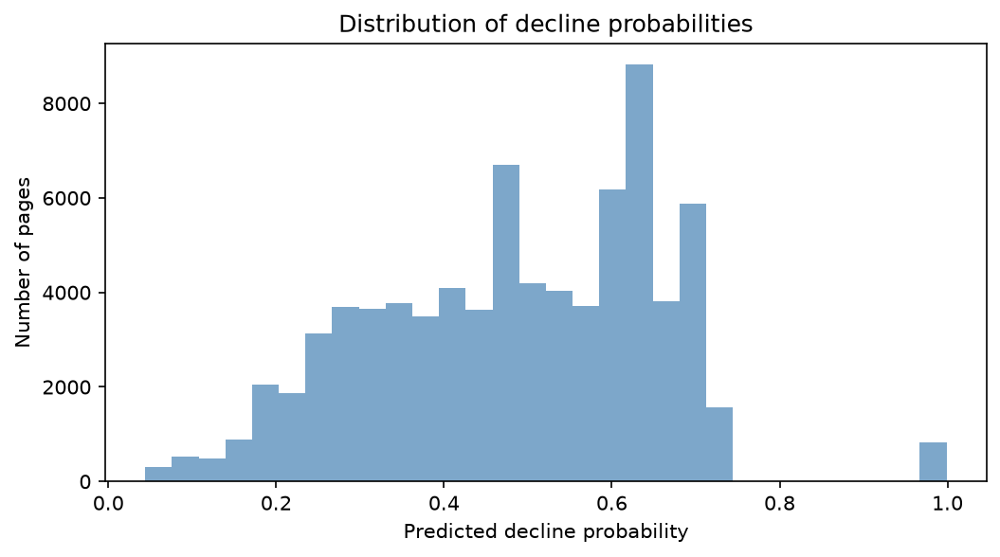

Abstract – We built a predictive ranking model to help content editors prioritise pages that are likely to experience a click‑through rate (CTR) decline. Using 3.6 million daily search performance records from the FlyRank internship warehouse, we aggregated impressions and average position over the first 15 days of March 2026 as features, and defined the label as a CTR drop between the first and second halves of the month. A Random Forest classifier, validated on a client‑held‑out split, achieved a Precision@50 of 0.84, compared to a hand‑written baseline rule of 0.52 (base rate ~0.40). The model provides a directional signal for editorial triage and is accompanied by a transparent action playbook with reason codes and human review guidelines. The work is observational and decision‑support; no causal claims are made.
FlyRank builds content as infrastructure: it researches, writes, publishes, and optimises content at scale. For each client, the system tracks thousands of pages across search results. Over time, content that once ranked well and attracted clicks quietly decays – rankings slip, clicks drop, and by the time a human notices, the opportunity is lost.
The valuable decision is not "which pages are declining" – that is known after the fact. The valuable decision is which pages should a human review first to prevent an impending decline? This is a ranking problem: out of thousands of visible pages, which ones are most likely to under‑perform their ranking position and lose clicks?
We framed the decision as a CTR‑based opportunity score. The action is a human review of title, meta description, or snippet content. The cost of a false positive is wasted editor time; a false negative means a missed opportunity to protect traffic. We chose this lane because CTR is directly observable and can be compared within the same search position tier, controlling for the dominant confounder of click‑through rate.
This case study is built entirely on pseudonymised FlyRank data. The goal is a decision‑support tool that helps editors triage their workload – not a system that replaces human judgment or claims to predict Google's algorithm.
We used the FlyRank internship warehouse, hosted on Hugging Face, which contains daily search performance data for content items. The main table is fact_content_daily_performance, partitioned by month. We focused on March 2026, the development month. After filtering for gsc_data_available = TRUE and gsc_impressions > 0, we worked with 3.6 million daily rows, aggregating to 77,540 content items with at least 100 impressions in the first 15 days.
Excluded columns: GA4 engagement columns were excluded because ga4_data_available is three‑valued and often zero‑filled before a client’s GA4 start date. AI referral columns were too sparse to support stable comparisons.
We used two features, both computed from the first 15 days of March 2026:
impressions_prev – total search impressionsavg_position_prev – average ranking positionThe label was defined on the second 15 days:
ctr_prev = clicks_prev / impressions_prev (first half)ctr_curr = clicks_curr / impressions_curr (second half)is_declining_label = 1 if ctr_curr < ctr_prev, else 0This is an observed, within‑month comparison; it does not require a proxy or a future window beyond the development month.
We built a transparent hand‑written rule that a human could read:
good_tier = position_tier in ["top_3","page_1","striking"]
positive_gap = (tier_avg_ctr - ctr_prev) > 0
score = good_tier * positive_gap * (tier_avg_ctr - ctr_prev) * impressions_prevThis rule flags pages that are in good positions, have below‑tier‑average CTR, and weights the gap by volume.
We trained a Random Forest classifier (300 trees, max depth 6, class_weight balanced) on the two features. The model outputs a probability of CTR decline. We used a client‑grouped split (GroupShuffleSplit, 80/20) to prevent pages from the same client appearing in both train and test – this is a more honest evaluation than a random split.
We deliberately added leaky signals (ctr_prev and ctr_curr together) to the feature set; Precision@50 jumped from 0.84 to 1.00, confirming that these features are unsafe. The final model includes only the two pre‑declaration features.
The Random Forest model outperforms the baseline at all evaluated ranks, with the largest lift at the top of the list.
| K | Baseline (hand rule) Precision@K | Random Forest Precision@K | Base rate |
|---|---|---|---|
| 20 | 0.55 | 0.90 | 0.403 |
| 50 | 0.52 | 0.84 | 0.403 |
| 100 | 0.49 | 0.72 | 0.403 |
Table: Precision@K on the client‑held‑out test set. The base rate (random pick) is 0.403. The Random Forest achieves a ~1.6× lift at K=50.

Permutation importance showed that impressions_prev had a slightly higher importance (0.0966) than avg_position_prev (0.0261), but both are modest – the model relies on a combination of both signals rather than a single dominant feature. About 20‑25% of the top 20 logistic regression picks were false positives, and these tended to have lower impression volumes, reinforcing the need for a volume floor.
The model output is a ranked queue with three action levels, each with a reason code:
Reason codes are concatenated flags: e.g., high_decline_prob_high_visibility_good_position. The queue is intended for decision support; a human editor must verify the page’s intent, recent updates, and SERP context before taking any action.
No‑go items: Do not automate rewriting; do not use for pages with fewer than 100 impressions; do not treat as causal proof.
All code is available in the public repository. The complete analysis is organised in notebooks under work/notebooks/:
w03_data_contract.ipynb – data grain, filters, leakage trapw04_baseline_score.ipynb – baseline rule constructionw04_signal_audit.ipynb – distribution and signal testsw05_model.ipynb – model training, evaluation, and comparisonw06_validation_audit.ipynb – honest split and leakage auditw07_action_playbook.ipynb – ranked actions and exportTo rerun: clone the repo, set the HF_TOKEN environment variable, and run the notebooks in order. All random seeds are fixed (42).
This work was built on the FlyRank ML Internship dataset – a pseudonymised warehouse of real search performance data. We thank FlyRank for providing access to this production‑grade data and for the opportunity to work on this problem.
Data source: FlyRank – The State of AI‑Driven SEO in Numbers (March 2026).